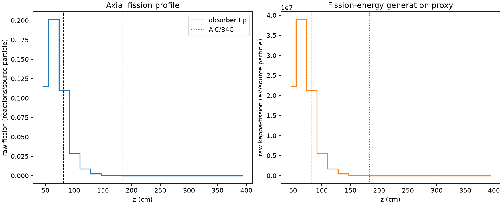
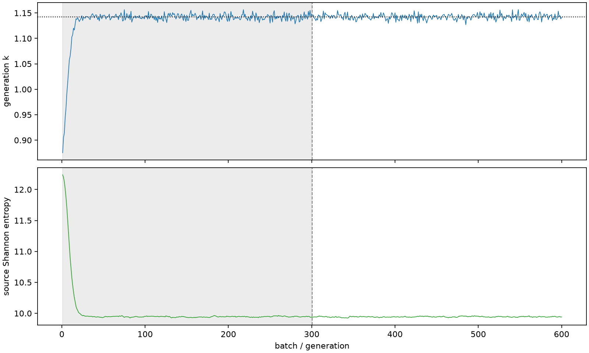

| field | value |
|---|---|
| experiment | V2-STAGE_256_OGRENCI_03-0015 |
| k | 1.1422192889882372 |
| MC standard error | 0.00018510769323528504 |
| seconds | 977.4376133210026 |
| acceptance | not_assessed |
| convergence | review_required |
Completed is output integrity only; physical and statistical review required. Zero tallies do not prove zero production or zero uncertainty.
| diagnostic | value |
|---|---|
| geometric fuel voxels | 5280 |
| zero fission tally voxels | 1980 |
| low signal fuel voxels | 3019 |
| low signal fission share | 0.000104164705348978 |
| low signal kappa share | 0.00010420476358473213 |
| important fission share | 0.9500063221711855 |
| previous filter included | 2261 |
| duration estimate s | 1562.5173488400023 |
| actual minus estimate s | -585.0797355189998 |
| fission relative MC error | statistics |
|---|---|
| all_geometric_fuel | {"voxels": 5280, "positive_mean_voxels": 3300, "zero_mean_voxels": 1980, "undefined_relative_error_voxels": 1980, "median": 0.05692446014501839, "p95": 0.9981154755737359, "maximum": 1.0000000000000002} |
| low_signal | {"voxels": 3019, "positive_mean_voxels": 1039, "zero_mean_voxels": 1980, "undefined_relative_error_voxels": 1980, "median": 0.5865066215248178, "p95": 1.0, "maximum": 1.0000000000000002} |
| important_95pct | {"voxels": 942, "positive_mean_voxels": 942, "zero_mean_voxels": 0, "undefined_relative_error_voxels": 0, "median": 0.0051216723552768035, "p95": 0.010140199028451955, "maximum": 0.011333373026764881} |
| outside_previous_filter | {"voxels": 3019, "positive_mean_voxels": 1039, "zero_mean_voxels": 1980, "undefined_relative_error_voxels": 1980, "median": 0.5865066215248178, "p95": 1.0, "maximum": 1.0000000000000002} |
| kappa_fission relative MC error | statistics |
|---|---|
| all_geometric_fuel | {"voxels": 5280, "positive_mean_voxels": 3300, "zero_mean_voxels": 1980, "undefined_relative_error_voxels": 1980, "median": 0.05682649367704398, "p95": 0.998114469451317, "maximum": 1.0000000000000002} |
| low_signal | {"voxels": 3019, "positive_mean_voxels": 1039, "zero_mean_voxels": 1980, "undefined_relative_error_voxels": 1980, "median": 0.5854029302094922, "p95": 1.0, "maximum": 1.0000000000000002} |
| important_95pct | {"voxels": 942, "positive_mean_voxels": 942, "zero_mean_voxels": 0, "undefined_relative_error_voxels": 0, "median": 0.005115428256576637, "p95": 0.01012777248818393, "maximum": 0.011318720143893258} |
| outside_previous_filter | {"voxels": 3019, "positive_mean_voxels": 1039, "zero_mean_voxels": 1980, "undefined_relative_error_voxels": 1980, "median": 0.5854029302094922, "p95": 1.0, "maximum": 1.0000000000000002} |
| axial bin | fission share | kappa-fission share |
|---|---|---|
| 1 | 0.2459036708488252 | 0.24589880932699915 |
| 2 | 0.43131754716575965 | 0.4312892591454429 |
| 3 | 0.2348575102286134 | 0.2348681554056942 |
| 4 | 0.061081058734272095 | 0.061096504425371206 |
| 5 | 0.018650746253376666 | 0.018655642235822625 |
| 6 | 0.0057102213903615345 | 0.005711734654587911 |
| 7 | 0.0017420446991548149 | 0.0017424822919631993 |
| 8 | 0.0005490881664934481 | 0.0005492296402711737 |
| 9 | 0.00014522267217363107 | 0.00014527318728088843 |
| 10 | 3.161874144264108e-05 | 3.16345032404078e-05 |
| 11 | 8.365140023837874e-06 | 8.368720116185205e-06 |
| 12 | 2.1932258971399966e-06 | 2.193677932135679e-06 |
| 13 | 7.00832632300245e-07 | 7.007379176189323e-07 |
| 14 | 1.1900973728239673e-08 | 1.204736028237031e-08 |
| 15 | 0.0 | 0.0 |
| 16 | 0.0 | 0.0 |
| 17 | 0.0 | 0.0 |
| 18 | 0.0 | 0.0 |
| 19 | 0.0 | 0.0 |
| 20 | 0.0 | 0.0 |
Histories include the inactive-to-active transition at batch 300. kappa-fission approximates fission energy production, not total heat deposition.

